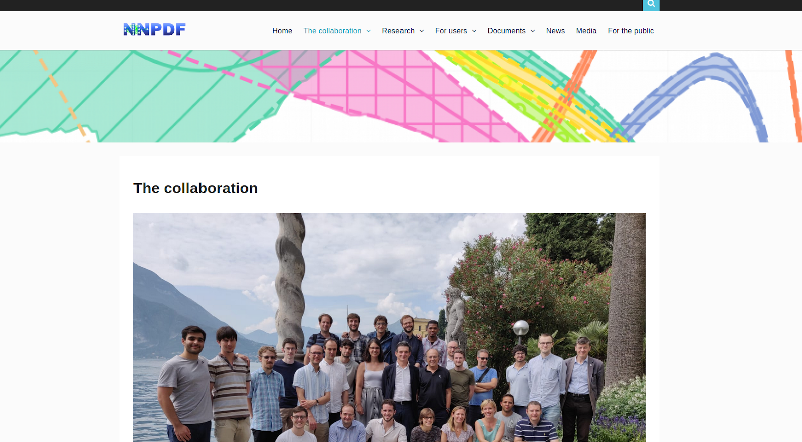
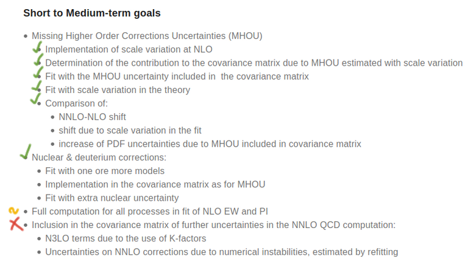

Parton Distribution Functions
November 2020
## Outline <div style="display: flex; margin: auto; width: max-content;"> <div> <ol> <li style="margin-bottom: 1em;">Intro <ul> <li>presentation</li> <li>data</li> </ul> </li> <li>Theory <ul> <li>divergences</li> <li>DGLAP</li> <li>solving evolution</li> </li> </ol> </div> <div> <ol start="3"> <li>Fit & Neural Network <ul> <li>definition</li> <li>methods</li> <li>testing</li> </li> </ol> </div> </div>
## Presentation <div style="display:flex;"> <div style="margin-right: 2rem"> <p> I'm Alessandro Candido, a previous student @ SNS, and currently a PhD @ Unimi. </p> <p> I'm also a member of N3PDF team lead by prof. Stefano Forte, and of the NNPDF collaboration. </p> <img src="assets/nnpdf_logo.png" width="240rem" style="margin: 2rem"/> </div> <img src="assets/photo.png" width="300rem"/> </div>
## Resources The content of this lectures is a summary of NNPDF work, so everything can be found of course in the papers of the collaboration. All the references to this works and PDF-sets are available on the [NNPDF website](http://nnpdf.mi.infn.it/), together with other useful resources, such as: <div style="display: flex;"> <ul> <li> brief methodological descriptions </li> <li> status of the projects (not updated) </li> <li> references to developed software </li> <li> ... and more :) </li> </ul>  </div> @--- ## N3PDF And of course there is also a [N3PDF website](http://n3pdf.mi.infn.it/), the main relevant resources are: - references to member's papers and talks - references to the software 
## Organization The NNPDF work is organized in 3 + 1 parts:  @--- ## Data The **data** tasks consist mainly in implementing the theory predictions' tables to compare the PDF fit to the experimental datasets available. <img src="assets/data.png" alt="data-goals" style="margin: auto;"> @--- ## Theory The **theory** job consist not only in studying the theoretical properties of the PDF and pQCD (mainly done by the single groups)  but especially in _implementing the software_ to make the **predictions** available for the fit. @--- ## Methodology The **methodology** is the hood for anything related to the fit: <div style="display: flex"> <div style="display: flex; flex-direction: column; justify-content: center"> <ul> <li> new ML methods and techniques </li> <li> managing physical constraints </li> <li> asses the <em>quality of fit</em> through tests </li> </ul> </div> <img src="assets/methodology.png" alt="methodology-goals" style="margin: auto;" width="400vw"> </div>
## Dataset <div style="display: flex"> <img src="assets/nnpdf31-data.png" alt="dataset" style="margin: 2rem" width="350vw"> <div> <p style="font-size: 0.7em"> The data-set related to the last released version (NNPDF 3.1) was mainly dominated by 2 sources: </p> <dl> <dt style="font-size: 0.8em">HERA</dt> <dd style="font-size: 0.6em"> They are <strong>DIS</strong> data, and therefore a clean probe of proton constituents, historically the most relevant. </dd> <dt style="font-size: 0.8em">LHC</dt> <dd style="font-size: 0.6em"> They are hadronic events, involving two partons at a time. The data abundance still makes them very relevant. </dd> </dl> <p style="font-size: 0.7em"> Which one will dominate the next PDF generation it's an open question. </p> </div> </div>